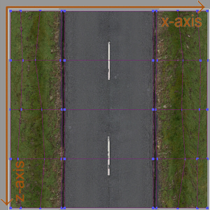

A
typical example of a tile without bending restrictions is a planar ground tile. In this case, the model has to be subdivided both in X and Z direction.
Another case is a road tile for example, where you will probably want to avoid bending the both driving lanes away from each other, but allow bending along the driving direction (to make the road go up/down smoothly).
Finally, in the situation of creating a building you will probably not want to make it bend in any direction at all.
All of these three cases are illustrated below (see Tile specification file
for setting up bending restrictions, see Track piece reference models for example
.max/.3ds files)

Plane
field tile, subdivided in X/Z axis
Road
tile, subdivided in Z axis only (X axis bending disabled)
House
tile, no subdivision
 The
lowest vertex in the "main" mesh (in vertical y-axis) defines the lower bottom of the tile bounding box. This bottom is used as a measure to align the tile to the heightmap vertically in-game. Usually the lowest vertex
is the ground plane where this technique works well. However, in certain situations you might want to create vertices that lie below ground level (such as tunnels). See the MakeP3D documentation on how to convert models
with vertices below ground level that don't effect the bounding box
The
lowest vertex in the "main" mesh (in vertical y-axis) defines the lower bottom of the tile bounding box. This bottom is used as a measure to align the tile to the heightmap vertically in-game. Usually the lowest vertex
is the ground plane where this technique works well. However, in certain situations you might want to create vertices that lie below ground level (such as tunnels). See the MakeP3D documentation on how to convert models
with vertices below ground level that don't effect the bounding box
Smoothing groups
Different from car-.p3d's, smoothing groups are not really supported by track pieces. In fact you only can set one, and only one, smoothing group (SG). All faces holding this SG will be smoothed together, the remaining polys will appear flat shaded in-game (they need to have "no smoothing group" assigned).
Construction checklist
Below is a checklist what has to be taken care of, when creating track pieces
|
Be sure track pieces “main” mesh meets one of the four dimensions: 20x20m, 40x40m, 20x40m or 40x20m |
|
As the “main” mesh is also responsible for collision detection, make sure it has sufficient but not too much detail |
|
Be sure to use “level of detail” meshes where useful (see Level Of Detail implementation) |
|
AI usually needs AI nodes placed in the center of tiles. Respect this when creating road tiles (see AI driver information for AI node setup) |
|
Make sure no gaps will come up between tile borders when combining track pieces |
|
Subdivide your track tiles every 5 meters in X/Z direction if possible |
|
When modelling below 0-height use special parameter provided by MakeP3D (see MakeP3D) |
|
Make sure polygons are only using one single or no smoothing group at all |
Texturing
You can either use Crashday's default textures and/or add your own .dds/.tga-files. The complete list of textures, used by track tiles, has to be placed into [crashday]\textures. Please refer to Textures and shaders for more information on how to use textures and shaders in-game.